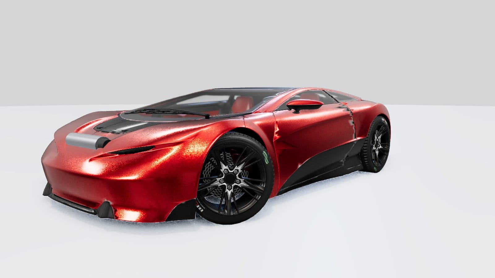
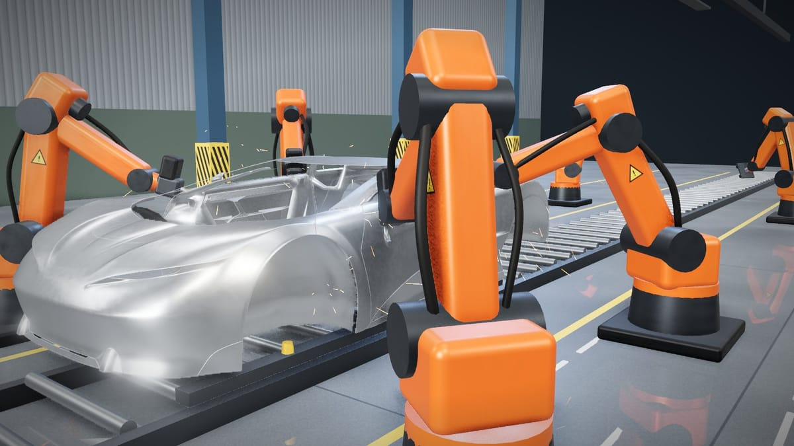
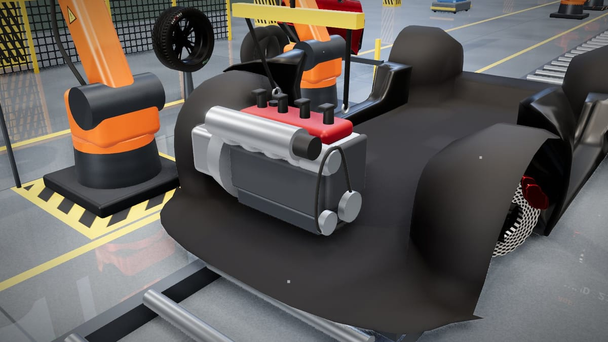
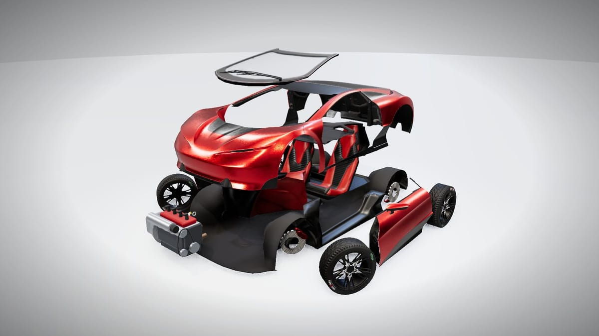
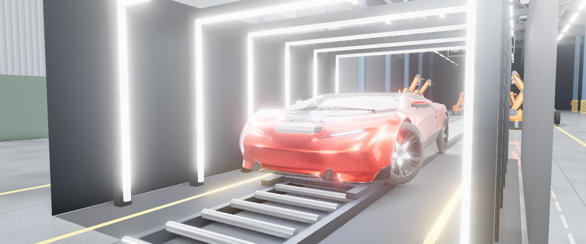

Van los onderdeel tot auto
Deze animatie laat in het klein zien hoe een auto op de productielijn wordt opgebouwd: eerst het chassis, dan het motorblok en de wielen, daarna plaatst de robotarm de carrosserie en tot slot gaan de ramen erin.
Klaar om te bouwen…
Schoolproject · Techniek
Hoe wordt een auto gemaakt?
Het maken van een auto is een lang proces met veel stappen. Voordat een auto op de weg rijdt, moet hij eerst ontworpen worden, moet de vorm van de carrosserie bepaald worden, moet de motor in elkaar gezet worden, moeten de juiste materialen gekozen worden en moet alles samen in een fabriek geassembleerd en getest worden. Op deze pagina wordt per deelvraag uitgelegd hoe dat werkt, op basis van de opgegeven bronnen.
Het ontwerpen van een auto begint bij ontwerpers en ingenieurs die schetsen maken en daarna digitale modellen van de auto opbouwen: de carrosserie, het interieur en de techniek erachter [1].
Bij het ontwerpen wordt rekening gehouden met veel factoren tegelijk: de marktpositie van de auto, de concurrentie, de doelgroep, de verwachtingen van klanten en de functies die de auto moet hebben. Autodesign is dan ook geen kwestie van “iets moois tekenen”, maar een proces met veel regels en variabelen waar rekening mee gehouden moet worden [2].
In de NPO-uitzending “Auto-ontwerp” (Het Klokhuis) wordt dit ontwerpproces in de praktijk laten zien: een presentator krijgt een kijkje bij de ontwerpafdeling van een autofabriek, waar te zien is hoe een ontwerp stap voor stap gaat van een eerste schets naar een rijdend digitaal 3D-model [3].

Onder de carrosserie zit eerst het chassis: het frame dat als een soort geraamte alle onderdelen van de auto draagt en daarom ook wel “de ruggengraat van de auto” wordt genoemd [4].
Er bestaan verschillende soorten frames, zoals het buizenframe en het ladderframe. Sinds de Lancia Lambda uit 1922 — de eerste auto met een zelfdragende carrosserie — wordt bij veel personenauto's ook de monocoque gebruikt. Bij een monocoque (van het Griekse “mono” en het Franse woord voor schelp) is de buitenkant van de auto zelf het dragende deel, in plaats van een los frame eronder. Deze techniek komt oorspronkelijk uit de luchtvaart en werd in 1962 door Lotus voor het eerst toegepast in de Formule 1 [4].

De carrosserie zelf is de bovenbouw van de auto: het buitenwerk, zonder de portieren, motorkap, wielen, motor, aandrijflijn en het interieur mee te rekenen. Het woord “carrosserie” komt van het Franse “carrosse”, wat koets betekent. De carrosserie beschermt de inzittenden bij een ongeluk, en de vorm ervan bepaalt ook hoeveel luchtweerstand de auto heeft, wat weer invloed heeft op het brandstofverbruik. Als materiaal wordt meestal plaatstaal gebruikt, maar ook aluminium, magnesium en verschillende kunststoffen komen voor [5].
Afhankelijk van de gekozen vorm ontstaan verschillende carrosserietypen, zoals de hatchback (compact en flexibel), de SUV (meer comfort en een hogere zit), de sedan (representatief) en de stationwagen (veel laadruimte) [6] [5].
De basis van elke motor is het motorblok: een soort frame dat meestal gemaakt is van gietijzer of aluminium [7].
In het motorblok bevinden zich de cilinders, waarin de zuigers op en neer bewegen, en kanalen waar olie en koelvloeistof doorheen stromen. Aan het motorblok zitten ook andere onderdelen vast, zoals de startmotor, de dynamo, de waterpomp, de brandstofpomp en de pomp van de stuurbekrachtiging [8].

Er zijn verschillende typen motorblokken. Bij een lijnmotor staan de cilinders achter elkaar in één rij; dit type wordt vooral gebruikt in de midden- en kleinere klasse auto's. Bij een V-motor staan de cilinders in twee rijen die samen op één krukas aangesloten zijn — in feite zijn dit twee lijnmotoren die aan elkaar zijn gekoppeld. Bij een boxermotor (een plat motorblok) liggen de cilinders in twee rijen tegenover elkaar, ook aangesloten op één krukas [8].
Het motorblok wordt gemaakt door gieten: er wordt een mal gebruikt van een mengsel van zirkoonzand, lijm en hardingsmiddel, omdat zirkoonzand een heel hoog smeltpunt heeft en dus bestand is tegen het hete, vloeibare metaal [8]. Zodra brandstof in de cilinders van het motorblok ontstoken wordt, ontstaat er een kleine explosie die de zuigers in beweging brengt en zo uiteindelijk de auto laat rijden [9].

1 2 3 4 5 6Een gemiddelde auto weegt zo'n 1300 tot 1600 kilogram. Het grootste deel daarvan, ongeveer 60 tot 65%, bestaat uit metaal: vooral staal en ijzer [10].
- 1Carrosserie meestal plaatstaal, soms aluminium of kunststof
- 2Ruiten glas
- 3Interieur steeds meer kunststof
- 4Deuren staal
- 5Wielen rubberen banden, velgen vaak van aluminium
- 6Motorblok gietijzer of aluminium
Metaal 60–65% Rubber 5–6% Overig, waaronder kunststof [10]
Staal is het metaal dat het meest gebruikt wordt bij het bouwen van een auto: bijna 65% van het materiaal van een gemiddelde auto is een staalproduct. Onderdelen van de stuurinrichting en ophanging zijn meestal van staal gemaakt, net als delen van de carrosserie, de wielen, het chassis en het frame [11]. Staal wordt vaak gekozen vanwege de combinatie van sterkte en relatief lage kosten [10].
Aluminium wordt steeds vaker gebruikt om auto's lichter en zuiniger te maken. Het vervangt op steeds meer plekken zwaardere metalen zoals ijzer, bijvoorbeeld bij de motor en de wielen, omdat het dezelfde sterkte kan bieden met minder gewicht [11]. Roestvaststaal wordt gebruikt op plekken waar roestbestendigheid belangrijk is, zoals bij bouten, beugels en onderdelen van de uitlaat [11].
Rubber wordt gebruikt voor de banden, afdichtingen, slangen en trillingsdempers; dit is al jaren stabiel zo'n 5 tot 6% van het gewicht van een auto. Het aandeel kunststof neemt juist toe, omdat kunststof licht is en tegenwoordig ook steeds sterker gemaakt kan worden, waardoor het voor steeds meer onderdelen — zowel binnen als buiten de auto — gebruikt kan worden [10].
Autofabrikanten bestellen onderdelen van metaal, rubber en kunststof bij allerlei toeleveranciers. Zo ontwikkelde Tata Steel bijvoorbeeld een nieuw, extra sterk type staal speciaal voor lichtere onderdelen zoals het chassis en de ophanging, zodat fabrikanten dunner en toch sterk materiaal kunnen gebruiken [12].
- 1Ontwerpschetsen en digitale modellen
- 2Materialenstaal, aluminium, kunststof, glas
- 3Onderdelengieten, persen en lassen
- 4In elkaar zettenlopende band, 18–35 uur
- 5Testenwerkt alles en is hij veilig?
Het maken van een auto verloopt in meerdere stappen: eerst het ontwerp (schetsen en digitale modellen), dan het kiezen van de juiste materialen, daarna het produceren van de losse onderdelen (bijvoorbeeld door gieten, persen en lassen), vervolgens het samenbouwen van al die onderdelen op een lopende band in de fabriek, en tot slot uitgebreid testen om te controleren of alles goed werkt en veilig is. Bij het ontwerpen van de techniek achter een auto wordt vaak de zogenoemde V-cyclus als basis gebruikt [13].
Het laatste onderdeel — het echte in elkaar zetten op de productielijn — gaat verrassend snel: dat kost ongeveer 18 tot 35 uur per auto, verdeeld over 3 tot 4 diensten, waarbij honderden werknemers tegelijk aan verschillende onderdelen van het proces werken [14].
Die snelheid is alleen mogelijk omdat alle onderdelen daarvoor al klaar moeten liggen. Een gemiddelde auto bestaat uit zo'n 30.000 onderdelen, die eerst allemaal gemaakt en naar de fabriek gebracht moeten worden, vaak door externe toeleveranciers. Hoe nieuwer en vernieuwender een ontwerp is, hoe meer tijd er nodig is voor ontwikkeling en techniek voordat er ook maar één onderdeel geperst kan worden [14]. Geteld vanaf het allereerste ontwerp tot de auto van de band rolt, duurt het hele proces dus veel langer dan die 18 tot 35 uur assemblagetijd alleen [15].

Antwoord op de hoofdvraag
Conclusie
Een auto maken is dus geen kwestie van één stap, maar van een heel traject: eerst wordt de auto ontworpen op de tekentafel en in 3D-software, dan krijgt de carrosserie via een chassis of monocoque zijn vorm, wordt het motorblok gegoten en opgebouwd uit tientallen onderdelen, worden overal de juiste materialen gekozen (vooral staal, aluminium, rubber en kunststof) en wordt alles tot slot in een fabriek samengebouwd en getest. De uiteindelijke assemblage in de fabriek duurt maar 18 tot 35 uur, maar het volledige traject van ontwerp tot een rijdende, geteste auto kost veel meer tijd, omdat eerst duizenden onderdelen ontworpen, gemaakt en aangeleverd moeten worden.
Verantwoording
Bronnenlijst
- Artikel
Studeersnel. (z.d.). Auto Maken: Stappen in het Ontwerp- en Productieproces. Geraadpleegd via studeersnel.nl - Artikel
Groenhuijsen, H. (z.d.). Blog over auto-ontwerp. Geraadpleegd via hansgroenhuijsen.nl - Video
NPO / Het Klokhuis. (z.d.). Auto-ontwerp. Geraadpleegd via npo.nl - Artikel
Autoblog.nl. (z.d.). Techniek: het chassis, de ruggengraat van de auto. Geraadpleegd via autoblog.nl - Artikel
Verzekeren.com. (z.d.). Auto carrosserie. Geraadpleegd via verzekeren.com - Video
Auto Atlas Keuzehulp. (2024). Wat je MOET weten over Alle Carrosserievormen! YouTube. youtube.com/watch?v=cFU7C1xl2T8 - Artikel
EasyCarParts.nl. (z.d.). Hoe werkt de motor van een auto. Geraadpleegd via easycarparts.nl - Artikel
Actualidad Motor. (z.d.). El bloque motor: qué es, de qué está hecho, partes, tipos, fabricación. Geraadpleegd via actualidadmotor.com - Artikel
Autodemontage Klaas Boer. (z.d.). Hoe werkt een automotor eigenlijk? Geraadpleegd via klaasboer.nl - Artikel
Autodemontage Klaas Boer. (z.d.). Van welke materialen zijn auto's gemaakt? Geraadpleegd via klaasboer.nl - Artikel
MetaalNieuws.nl. (z.d.). Van welke metalen worden auto's gemaakt? Geraadpleegd via metaalnieuws.nl - Artikel
Vraag&Aanbod.nl. (z.d.). Nederlandse automotive toelevering en materialen. Geraadpleegd via vraagenaanbod.nl - Artikel
JVIS USA, LLC. (2018). How Long Does It Take Automakers to Build a Car? Geraadpleegd via jvis.us - Artikel
Studeersnel. (z.d.). Auto Maken: Stappen in het Ontwerp- en Productieproces. Geraadpleegd via studeersnel.nl - Video
YouTube. (2025). Discover the Time It Takes to Build a Car: Surprising Facts Revealed! youtube.com/watch?v=qk9Wmo7FyY0